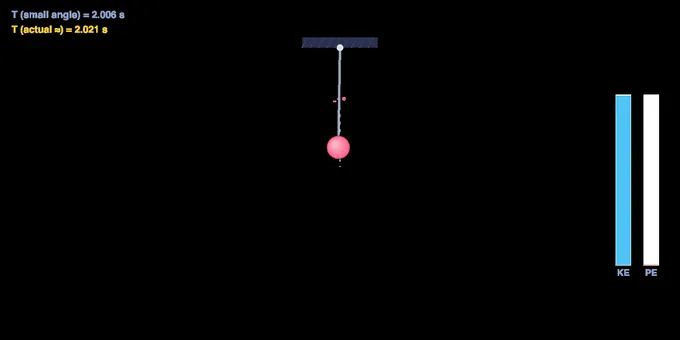
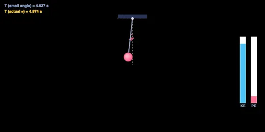
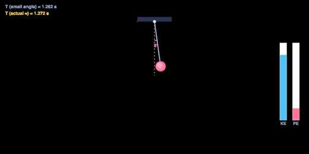

Simple Pendulum Simulator
Live Swing • Period T = 2π√(L/g) • Length, Gravity, Amplitude & Mass • Energy Bars • Damping • Practice & Quiz
Display Controls
Σ Live equations — values substituted from the current setup
1 Overview
This free, browser-based simple pendulum simulator animates a mass swinging on a string and shows the physics live. Change the length, gravity, amplitude and mass and watch the period, frequency, maximum speed and the exchange between kinetic and potential energy update in real time. It uses the full nonlinear equation of motion, so you also see how large swings stretch the period beyond the textbook formula.
It has four modes: Simulate (the interactive swing), Explore (period, energy, factors and applications), Practice (work out periods at your own pace) and Quiz (a graded 5-question test with a star rating). Built for physics and engineering students, vocational trainees and instructors.
2 Getting Started
Press ▶ Start to release the pendulum from its amplitude angle. Use the sliders to set Length (0.2–4 m), Amplitude (5–80°), Mass (0.1–5 kg) and Gravity, or pick a world (Earth, Moon, Mars, Jupiter). Toggle Damping to add air resistance and Energy bars to show the KE/PE split.
- Change the mass while it swings — the period does not change.
- Double the length and the period grows by √2.
- Right-click (or long-press) the diagram for Save Image / Copy Period / Reset.
- Use the SI / Imperial toggle to switch length, speed, gravity, mass and energy readouts between metric (m, m/s) and imperial (ft, ft/s) units.
- Turn on ✋ Manual Drop, then click-and-drag anywhere on the canvas to swing the bob to any angle (up to 170°) — release to drop it from exactly that point. The drop obeys the same physics engine as the sliders, so it swings symmetrically with no overshoot, and decays normally if Damping is on.
3 Simulate Mode & Readouts
The badges show the period (small-angle T = 2π√(L/g)), the frequency f = 1/T, the maximum speed at the bottom of the swing, the live angle, and the total mechanical energy. When the energy bars are on, watch potential energy turn into kinetic energy as the bob speeds up toward the bottom, then back again.
Open Display Controls (top-left of the canvas) to switch the right-hand panel between Energy bars and a θ(t) time-domain waveform — only one shows at a time. The waveform traces the actual angle the physics engine computed, sampled every frame, on a fixed axis set to the release amplitude, so turning on Damping makes the decaying envelope directly visible swing by swing instead of a constant sine wave.
The Live equations panel shows T, f, ω, energy and vmax in classical notation with your numbers substituted, and 🔢 Show Calculations opens the full step-by-step derivation.
For amplitudes above about 15° the true period is slightly longer than the small-angle value; the simulator shows the corrected large-amplitude period on the diagram so you can compare.
4 Explore Mode
Explore covers five categories: Basics (what a simple pendulum is, restoring force, SHM), Period (the formula and worked examples), Energy (KE↔PE exchange and conservation), Factors (why length and gravity matter but mass and small amplitude do not) and Applications. Pick a category, then a topic card.
5 Practice & Quiz
Practice gives random length/gravity values and asks for the period — type your answer and press Check for instant feedback and the full T = 2π√(L/g) working. Your score is tracked.
Quiz gives 5 randomly chosen questions (period, the effect of length, gravity, mass and amplitude, and energy) with instant grading and a final star rating. Readout badges are hidden in Practice and Quiz.
6 Key Formulas
Period (small angle): T = 2π√(L/g). Frequency: f = 1/T. Angular frequency: ω = √(g/L).
Energy: PE = mgL(1 − cosθ), KE = ½m(Lω)², total energy is conserved (no damping).
Large-amplitude period: T ≈ T₀(1 + θ₀²/16 + …).
Worked example: L = 1 m on Earth → T = 2π√(1/9.81) = 2.006 s, so f ≈ 0.50 Hz.
7 Tips & Best Practices
- Keep the amplitude below ~10° if you want the textbook small-angle formula to be accurate.
- To halve the period, make the pendulum one-quarter the length.
- A 1 m pendulum on Earth has a period very close to 2 seconds — the “seconds pendulum”.
- On the Moon the same pendulum swings about 2.5× slower because g is smaller.
- Turn on damping to see a real pendulum slowly lose amplitude while its period stays nearly constant.
Simple Pendulum Simulator — Period, SHM & Energy

The simple pendulum — a mass on a light string swinging under gravity — is one of the most important systems in physics. It is the cleanest example of simple harmonic motion, the model behind clocks, seismometers and metronomes, and the classic experiment for measuring g. This interactive simple pendulum simulator lets you change the length, gravity, amplitude and mass and watch the swing, the period and the energy flow in real time.
The Period of a Simple Pendulum
For small swings the period — the time for one complete back-and-forth — is T = 2π√(L/g), where L is the length to the centre of the bob and g is the gravitational field strength. Two things jump out: there is no mass and no amplitude in the formula. A 1 metre pendulum on Earth gives T = 2π√(1/9.81) = 2.006 seconds — the famous “seconds pendulum” that beats once per second in each direction.
Why Mass Does Not Matter
Gravity pulls harder on a heavier bob, but a heavier bob also has more inertia to move. The two effects scale with mass in exactly the same way, so the mass cancels out of the equation of motion and the period is independent of mass. Drag the mass slider while the pendulum swings and you will see the period readout stay put — only the energy changes.


Why Length and Gravity Do Matter
Because the period depends on √(L/g), a longer pendulum swings more slowly and a stronger gravitational field speeds it up. Quadruple the length and the period doubles; move to the Moon (g = 1.62 m/s²) and the same pendulum swings about 2.5× slower. This square-root relationship is why pendulum clocks are tuned by moving a small adjusting nut up or down the rod to change L by a few millimetres.
Energy in a Swinging Pendulum
At the ends of the swing the bob is momentarily at rest and all the energy is potential: PE = mgL(1 − cosθ). At the bottom the bob moves fastest and all of it is kinetic: KE = ½mv². In between, energy continuously trades between the two while the total stays constant (if there is no friction). Turn on the energy bars to watch this exchange, and switch on damping to see a real pendulum slowly bleed energy to air resistance.
Large Swings and the Limits of the Formula
The neat small-angle formula assumes sinθ ≈ θ, which only holds for modest swings. For larger amplitudes the true period is a little longer: about 4% longer at 45° and 18% longer at 90°. Because this simulator integrates the full nonlinear equation, it shows the actual period alongside the ideal one — a great way to see exactly where the textbook approximation breaks down.
Worked Examples
| Setup | Calculation | Period |
|---|---|---|
| L = 1 m, Earth | 2π√(1/9.81) | 2.01 s |
| L = 0.25 m, Earth | 2π√(0.25/9.81) | 1.00 s |
| L = 1 m, Moon | 2π√(1/1.62) | 4.94 s |
| L = 2 m, Earth | 2π√(2/9.81) | 2.84 s |
Who Uses This Simulator?
This tool is used by physics students studying SHM and oscillations, engineering learners meeting vibration for the first time, lab classes measuring g with a pendulum, and instructors demonstrating period, energy and the independence of mass. It is a natural companion to spring-mass and vibration studies.
Explore Related Simulators
Continue with the Simple Harmonic Motion simulator for the spring-mass view of oscillation, the Spring-Mass-Damper vibrations simulator for damped and forced motion, the Hooke’s Law simulator, the Free Body Diagram & Force Resolver, the Newton’s Laws of Motion simulator, and the Escape Velocity simulator.